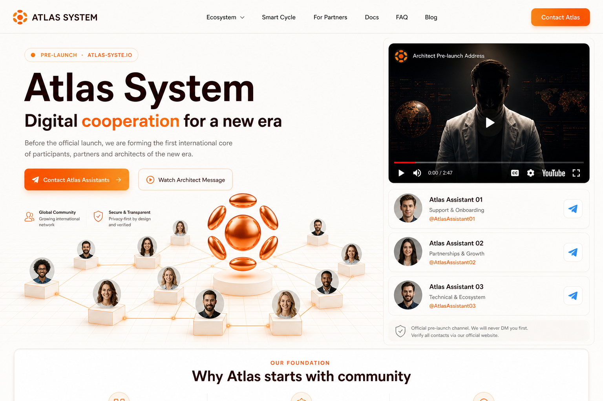

People before traffic
Pre-launch growth is based on leaders and recommendations, not anonymous paid traffic alone.
Digital cooperation for a new era.
Before the official launch, Atlas is forming the first international core of participants,
partners and architects of a transparent mutual-support ecosystem.
Atlas is not launching as a faceless product. It starts with people: leaders, teams and communities who can explain the idea and build trust before the official launch.
Pre-launch growth is based on leaders and recommendations, not anonymous paid traffic alone.
The page should quickly explain the idea, show the Architect message and direct people to official Telegram assistants.
The goal is to let communities study Atlas early, ask questions and prepare for launch.
Atlas System is a Web3-based mutual-support ecosystem built around Smart Cycle mechanics, transparent smart contracts, knowledge, partner growth and future DAO infrastructure.
Smart Cycle-1 is the first core product of Atlas. The pre-launch page only gives a short explanation, while deeper mechanics stay in separate educational videos and docs.
Select the amount and participation term.
Create a Smart Cycle through the platform interface.
The selected period runs according to smart-contract rules.
After completion, request help back with the calculated delta when liquidity allows.
Pre-launch access is open before the first public stage.
This page is for network leaders, communities and teams who want to study Atlas before launch, understand the mechanics and prepare their structure in advance.
People who can build teams and explain the system responsibly.
Groups looking for a transparent digital mutual-support model.
People who want to study Atlas before the official launch.
This is the one-screen concept image that inspired the full mockup structure. It is kept here as a reference for designer direction.

Atlas does not promise guaranteed income. Participation results depend on community activity, smart contract liquidity and the current stage of the Smart Cycle. This mockup is a design and structure draft for the pre-launch landing page.